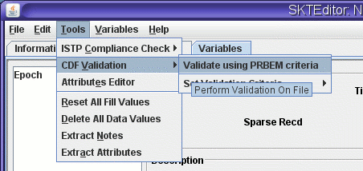
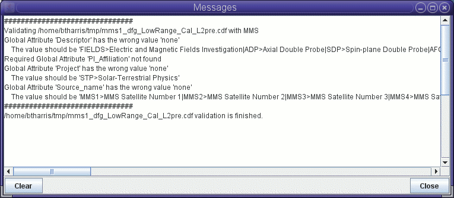

CDF Validation
Introduction
In addition to this application's ability to evaluate CDF files for
conformance with
the Space Physics Data Facility
Guidelines for CDF (see https://spdf.gsfc.nasa.gov/sp_use_of_cdf.html),
the application can also evaluate CDF files with respect to more
general criteria. This functionality is often used to enforce
additional, mission/project specific standards. The validation
criteria is specified in an Extensible Markup Language (XML) file.
Prior to validating a CDF file,
you should set the criteria by which you want the CDF file validated.
Setting the Validation Criteria File
The validation criteria setting is retained between SKTEditor sessions
so it will initially be the last used criteria. If this is not
the criteria you want to use, it may be changed by selecting menu item
will
display a stand file chooser dialog from which you may select the
criteria file that you want used.
- Place a validation file named
CdfValidationCriteria.xml in
your home directory.
- Set an environment variable named
CDF_VALIDATION_CRITERIA to the name of the file.
- Set a Java system property named
cdf.validation.criteria
to the name of the file.
These methods are more commonly used when using the validation software
in a command-line mode.
Validating a File
To validate the current file, select the SKTEditor menu item

Diagnostic messages
concerning validation are desplayed in the Messages
window
which is displayed by selecting the Show Messages
button
at the bottom righthand corner of the editor window.

See also: